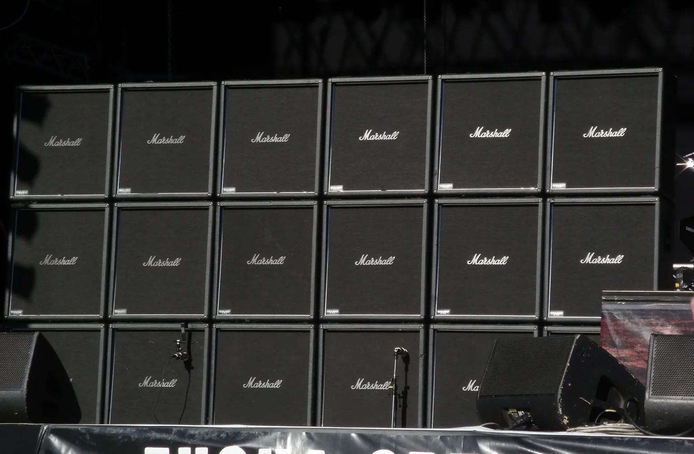

Case Study — Marshall DNA Translation
Rock & Roll
Rock & Roll
Never Dies
By 2010, Marshall’s core amplifier market was becoming increasingly niche. Zound Industries saw an opportunity to translate that identity into entirely new product categories with much larger addressable markets.

Translation

Rather than simply licensing the Marshall logo, the distinctive brand DNA was translated: its design rules, materials, proportions, tactile response and unmistakable stage presence. The products still looked and felt Marshall, even as the category changed completely.
Results
Marshall moved from guitar amplifiers into home and consumer audio. The result was a vastly expanded market, ultimately leading to a $1.1B acquisition.
60+Years of Heritage
90+Global Markets
$4B+Expanded Market
$1.1BExit in 2025